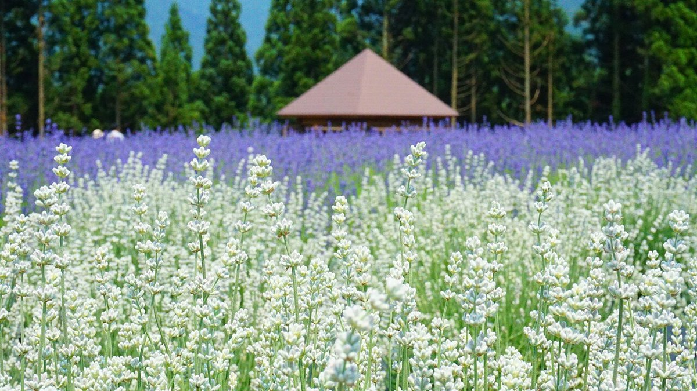
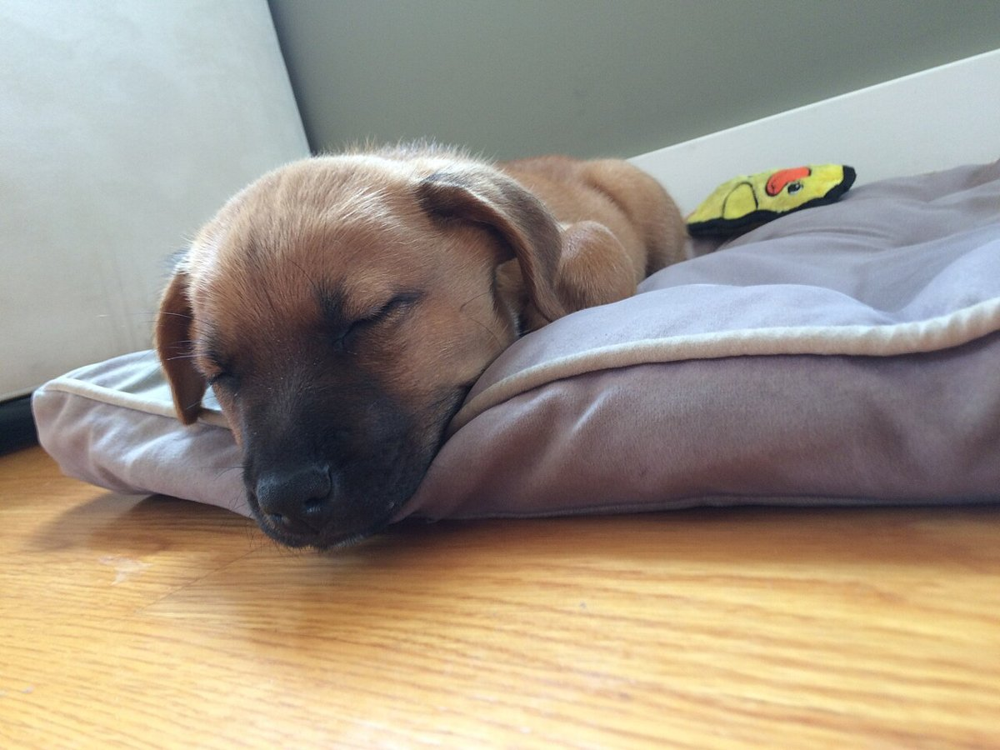
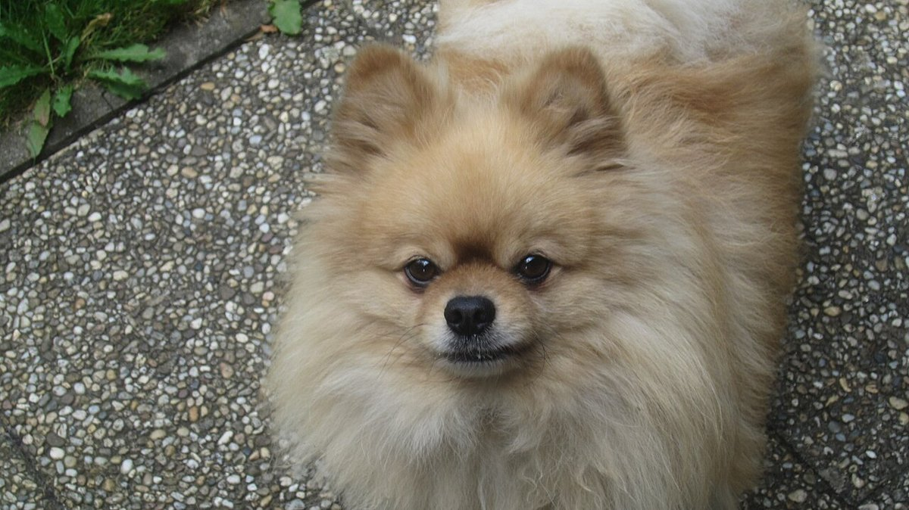
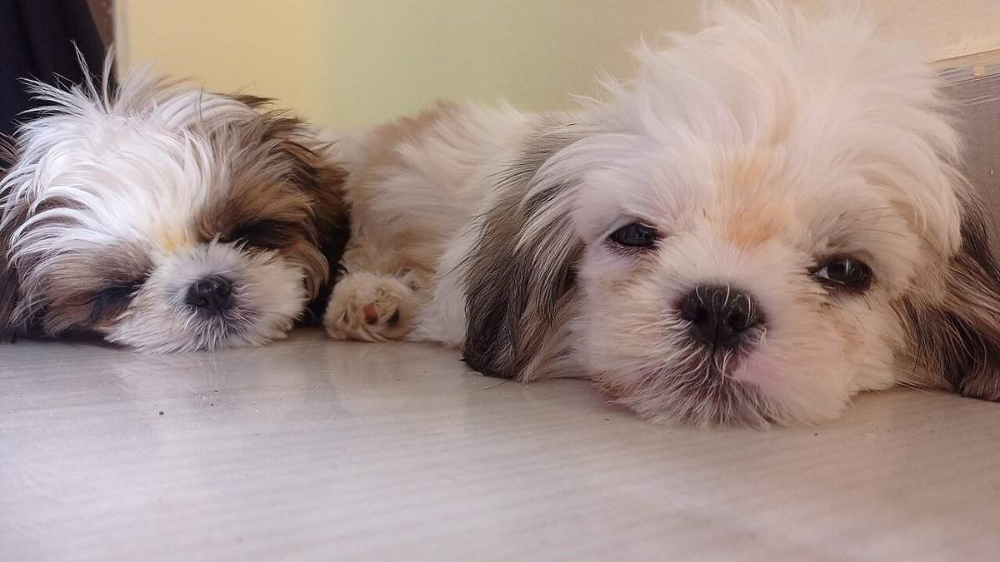
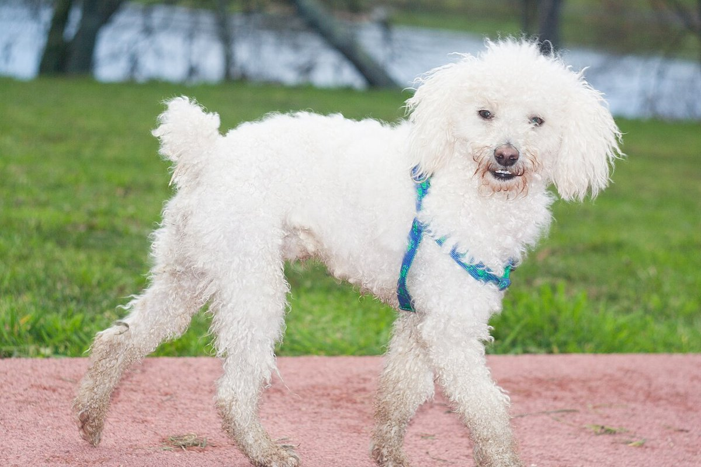

佐賀県神埼市 ドッグサロン
ふじ色のやさしい時間を、
わんこに。
神埼市神埼町のドッグサロン「ドッグサロン coco」のご案内です。ご相談はお電話かInstagramからどうぞ。
このサンプルのコンセプト
藤やラベンダーのような、やわらかな紫を基調にした「ゆったり過ごせる雰囲気」のイメージで制作しました。お店の理念や店名の由来を表すものではなく、デザイン上の提案です。
わんこのアルバム
横にスクロールしてご覧ください(フリー素材のイメージ写真です)。




お店の情報
- 店名
- ドッグサロン coco
- 住所
- 佐賀県神埼市神埼町枝ヶ里111-3 ギャザーエリア内
- 営業時間
- 準備中(お問い合わせください)
- メニュー・料金
- 準備中(お問い合わせください)
まずはお気軽にご相談ください
電話 0952-37-8871 / Instagramからも受け付けています。
写真はフリー素材のイメージです。店舗・施術の実際の様子ではありません。神埼市以外(海外を含む)で撮影されたもの、撮影地が不明なものを含みます。